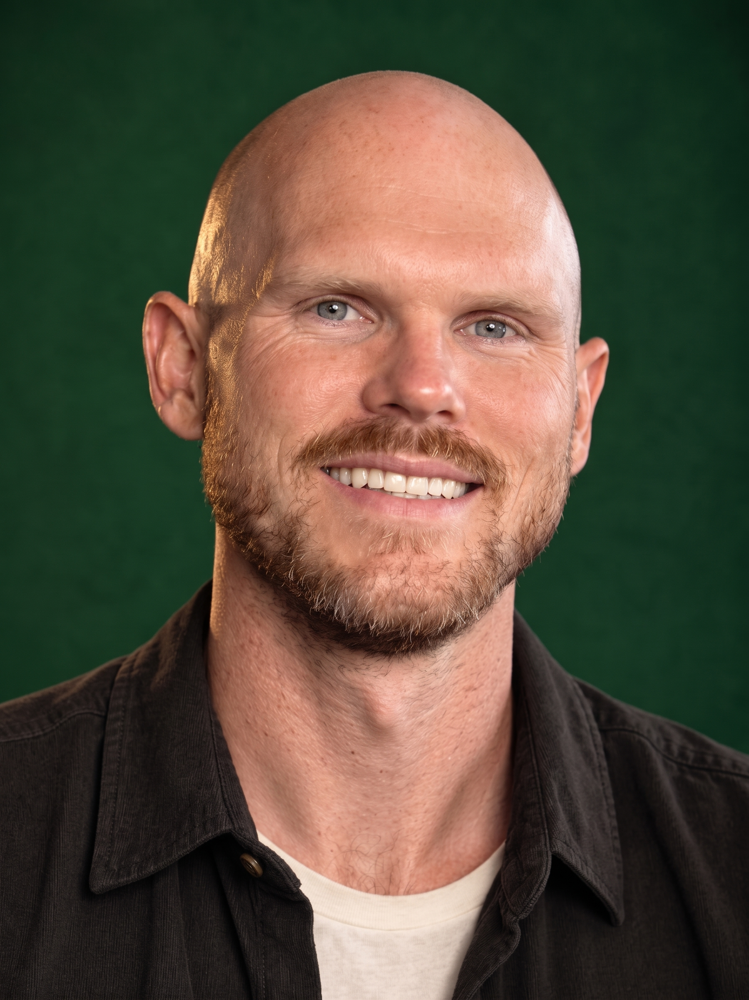
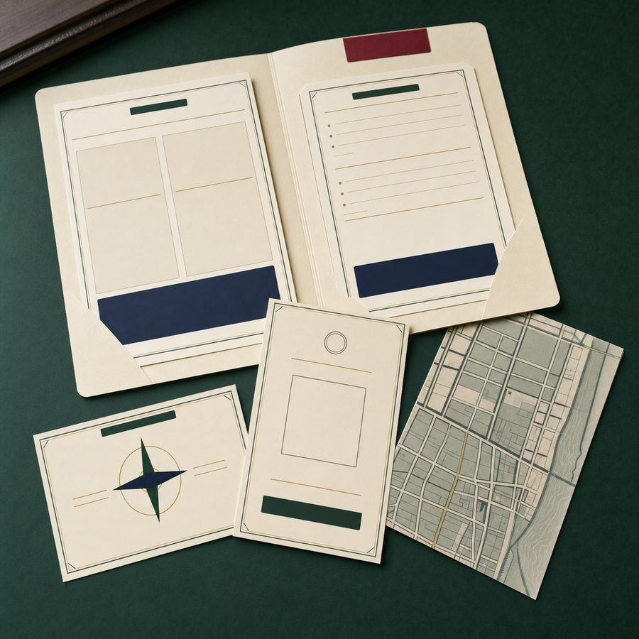

A reason to go out tonight.
Something happening, with a crew, a route, and a small reward for showing up.
I build games and tools that get people out and moving around St. Pete.
Community Play Tools is my local studio. I design the experience, write the software, sign up the venues, and show up on the street to run it.
Why trust the build: seven-plus years leading programs and innovation at Sony PlayStation, and the creator of St. Pete Detective Club, a paid mystery played across six downtown locations.

Founder of Community Play Tools. Building in St. Pete, full time.
Always on is never an event.
Downtown already has apps, punch cards, and games that are always there, so they’re never a priority. People show up for a happening. Downtown Discovery gives people a reason to be downtown tonight, on the nights our merchants need it most.
It’s a local, locally run platform built on small play stations inside neighborhood shops, open to St. Pete creators who want to build the next game on it.
Something happening, with a crew, a route, and a small reward for showing up.
Foot traffic when you need it, not another discount on a night you’re already full.
Visits spread across more blocks, with data to show where people actually went.

St. Pete Detective Club sends crews of three to six through a 2.5-mile mystery across six downtown locations, solving clues together on a custom mobile app.
I built all of it: the story and puzzles, the software, the printed case folios, the venue partnerships, ticketing, promotion, and hosting on the night.
Before St. Pete, I led Beautiful PB, a volunteer urbanism nonprofit in San Diego, and took a contested bike boulevard through six public workshops to unanimous approval. More about me
“Ryan’s leadership combines thoughtful humility with exceptional expertise and drive. He has raised the bar for how younger leaders can contribute to urban planning, mobility, and community advocacy.”
“Ryan joined at a critical time and immediately took control of complex tasks many would find daunting. He has a rare ability to dive into the nitty-gritty of local issues and find where a difference can be made.”
“Watching him evolve from a hesitant Vice President to a powerhouse community leader has been inspiring. He set a high standard for how younger generations can lead in urbanism.”
If you run a class-based studio in St. Pete, I’d like to hear how memberships and drop-ins work for you today.
Share your takeCheck-in games, feedback tools, and menu helpers built to test how people gather and decide in shared places.
Browse the labIf you run a business, a district, or a creative project in St. Pete, I’d like to hear about it. Coffee’s on me.
Getting involved in your city should feel like play, not homework.